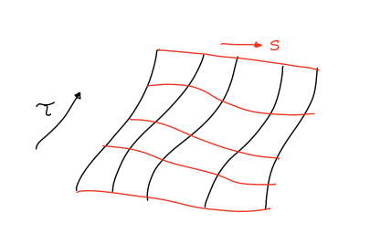
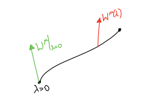
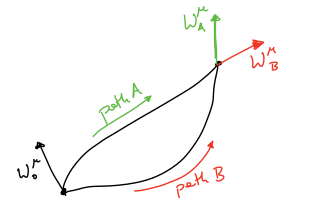
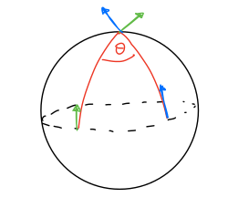
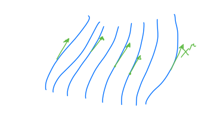
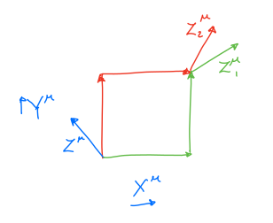

6. Week 6¶
6.1. Acceleration¶
In this section we want to understand the tidal forces, that we have discussed already in the context of Newtonian mechanics, from the point of view of General Relativity. We start by defining the covariant derivative of a vector \(W^\mu\) with respect to \(\lambda\) by
We can connect this definition to the definition of a covariant derivative that we introduced before: if \(W^\mu\) was a vector field \(W^\mu(x)\) and we define \(W^\mu(\lambda)=W^\mu(x(\lambda))\) to be its value at the point \(x(\lambda)\) then
where in the last expression we recognise the covariant derivative of a vector field from before.
We established that \(\frac{d x^\rho}{d\lambda}\) is a vector and \(\nabla_\rho W^\mu\) is a tensor and therefore \(\frac{DW^\mu}{D\lambda}\) is a tensor. Since it has one upper index then it is a vector.
Definition: let \(v^\mu(\tau)=\frac{dx^\mu}{d\tau}\) be the four-velocity of a massive particle along a timelike path. We define
the four-acceleration along a timelike path. This is a reasonable definition because
\(A^\mu\) reduces to \(\frac{d^2 x^\mu}{d\tau^2}\) in the flat space (SR limit).
\(A^\mu=\frac{Dv^\mu}{D\tau}\) is a vector.
We have \(A^\mu=\ddot{x}^\mu+\Gamma_{\nu\,\,\,\lambda}^{\,\,\,\mu}\dot{x}^\nu \dot{x}^\lambda=0\) along a geodesic, so the four-acceleration of a free particle is zero.
6.2. Geodesic deviation¶
Before, we argued that in Newtonian gravity the relative acceleration of two nearby freely-falling particles at \(\vec{x}(t)\) and \(\vec{x}(t)+\vec{y}(t)\) is given by
What is the corresponding statement in GR? To answer this, consider a family of timelike geodesics, smoothly labelled by a parameter \(s\), with \(\tau\) the proper time along each geodesic so that \(x^\mu(\tau;s)\) describe the family:
{kind=link}
Nearby geodesics then correspond to values of \(s\) which are close. The separation between geodesics at \(s\) and \(s+\delta s\) at ‘time’ \(\tau\) is then described by the derivative \(\frac{\partial x^\mu}{\partial s}\) as
To examine the relative acceleration, we look at \(\frac{D^2\xi}{D\tau^2}\) where
First, we observe that
Now, the relative acceleration is the second proper-time derivative of the separation (we drop the \(\delta s\) factor). Then we need to examine the following quantity:
We claim that
To show this we first observe that
But in LIC \(\frac{D\xi^\mu}{D\tau}\stackrel{\star}{=}\frac{\partial \xi^\mu}{\partial \tau}\) and \(\frac{Dv^\mu}{Ds}\stackrel{\star}{=}\frac{\partial v^\mu}{\partial s}\) and therefore this equality is true in any coordinate system.
Let us now work in LIC. We have
We can use the geodesic equation
to find that
We can substitute this in our previous calculation
The final bracket is nothing else than the Riemann tensor in LIC and we end up with:
Since all ingredients in the equation above are tensors then this equation is true in any coordinate system.
We can now compare this result to the one we derived for tidal forces in the non-relativistic limit:
Note
Relative acceleration (‘tidal forces’) are given by \(R_{\mu\nu\,\,\,\kappa}^{\,\,\,\,\,\,\,\lambda}\), i.e. curvature of spacetime.
In Newtonian gravity, the vacuum equation for \(\phi\) is
This suggests the vacuum equation for GR should be
This should be true for all timelike vectors \(v^\mu\) and therefore we conslude that
This is the vacuum Einstein equation!
6.3. Symmetries¶
Consider a vector field \(\chi^\mu(x)\) satisfying
Such a vector field is called a Killing vector field.
Consider an affinely parametrised geodesic \(x^\mu(\lambda)\) and the quantity \(k=\chi_\mu V^\mu\), where \(V^\mu=\frac{dx^\mu}{d\lambda}\). Clearly, \(k\) is a scalar quantity, independent of the coordinate choice and the choice of the parameter \(\lambda\).
Exercise
If \(\chi\) is Killing vector then \(k\) is constant along the geodesic. Thus \(k\) is a conserved quantity of the motion.
Hint: \(\frac{d k}{d\tau}=\frac{D k}{D\tau}=\frac{D}{D\tau}(\chi_\mu v^\mu)\)
If a metric \(g_{\mu\nu}\) does not depend on one of the coordinates, then we can find a Killing vector that corresponds to this symmetry. For instance, if \(g_{\mu\nu}\) does not depend on say \(x^0\), that is \(\frac{\partial}{\partial x^0}g_{\mu\nu}=0\), then \(\chi^\mu=(1,0,0,0)\) is a Killing vector.
Exercise
Show that \(\nabla_{(\mu}\chi_{\nu)}=0\) is equivalent to
The overall message is that
This is the Noether’s theorem in General Relativity.
6.4. Geodesic congruences and parallel transport¶
Given a path \(x^\mu(\lambda)\) we say that a vector \(W^\mu\) is parallel transported along the path if \(\frac{D W^\mu}{D\lambda}=0\).
{kind=link}
For example if \(x^\mu(\lambda)\) is affinely parametrised geodesic then the tangent vector \(V^\mu=\frac{dx^\mu}{d\lambda}\) has \(\frac{DV^\mu}{D\lambda}=0\).
Given a vector \(W_0^\mu\) at \(\lambda=0\), we can solve the equation \(\frac{DW^\mu}{D\lambda}=0\), that is a first order ordinary differential equation, to find \(W^\mu(\lambda)\) such that \(W^\mu(0)=W_0^\mu\) and it is parallel transported along a given path \(x^\mu(\lambda)\).
The value of \(W^\mu\) at the end of the path depends on which path was taken.
{kind=link}
If a vector \(W^\mu\) is parallel transported along a geodesic with tangent vector \(V^\mu=\frac{dx^\mu}{d\lambda}\) then \(W^\mu V_\mu\) is constant.
For example, on \(S^2\), the \(W^i V_i\) is dot product of vectors:
{kind=link}
We can extend the notion of parallel transport to vector fields: a congruence of curves is a smooth family of curves such that each point in spacetime lies on exactly one of the curves. In four-dimensional spacetime the curves are labelled by 3 parameters + the parameter \(\lambda\), i.e. the parameter \(\lambda\) along the curves becomes one of the coordinates on spacetime.
The tangent vector \(X^\mu=\frac{\partial x^\mu}{\partial \lambda}\) then becomes a vector field over all of the patch of space covered by the curves.
{kind=link}
We have for any vector field \(W^\mu(x)\) on spacetime
and therefore
If the curves in the congruence are affinely parametrised geodesics, then it is called an affinely parametrised geodesic congruences and \(X^\mu=\frac{\partial x^\mu}{\partial\lambda}\) is an auto-parallel vector field
The Riemann tensor can be understood as follows:
{kind=link}